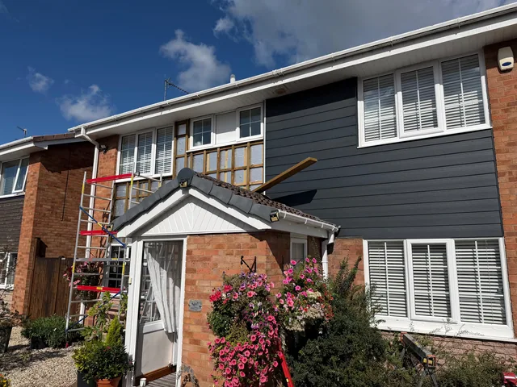

Cladding is mostly carpentry. What decides whether an elevation still looks right in five years is the batten grid behind it, the ventilation gap, and how the corners and reveals are cut — none of which you can see once the boards are on.
Cedar
Western red cedar, with the grain and the colour movement that comes with it. It silvers if you leave it and holds its tone if you treat it. Either is a decision, not an accident, and we will tell you which you are choosing.
Composite
Wood-grain composite board in charcoal, grey, natural, teak or brown. It does not rot, warp or need treating, and it holds its colour. On a north elevation or anywhere awkward to re-treat, it is usually the better call.
